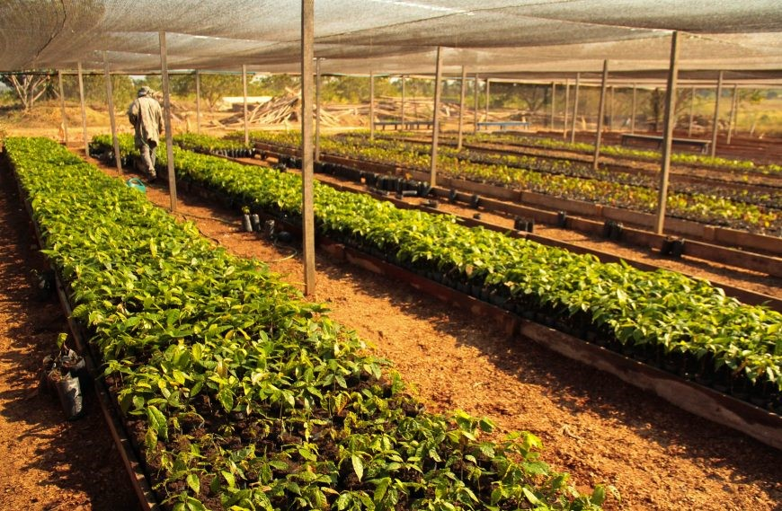

A Revolução Vegetal na Alimentação
Fazenda Futuro, em busca de um futuro mais sustentável
Inovação de produtos
Hoje em dia está se tornando cada vez mais comum as preocupações com saúde e o meio ambiente. A busca por outras alternativas de alimentos, de forma mais sustentáveis e éticas, está cada vez mais ganhando destaque. A Fazenda Futuro é uma das empresas que desenvolvem alimentos à base de plantas, que se assemelham aos de origem animal. Eles utilizam de diversas tecnologias para que os produtos sejam os mais éticos e sustentáveis possível. A Fazenda Futuro oferece produtos como carne e leite, entretanto feitos 100% de plantas, com ingredientes naturais e não transgênicos. Porém, o sabor ainda prevalece. Para deixar o mais próximo possível com os produtos de origem animal, são usados diversos ingredientes. Entre eles:
- Soja - Fornece proteína ao alimento;
- Extrato de plantas - Para o sabor e textura;
- Óleo de coco - Gordura;
- Ervilha - Fornece ferro;
- Beterraba - Dá cor ao alimento.
As “Carnes do Futuro” deram tão certo, que a empresa começou também a produção de um leite vegetal e de uma manteiga. Ambos os produtos são considerados como o mais próximo possível do produto original de origem animal.
“Eu provei a carne de planta da Fazenda Futuro e fiquei doida. Já pedi para servir na festa e obriguei todo mundo a provar”Anitta. Cantora e divulgadora da marca Fazenda Futuro
Contribuição Ambiental e Sustentabilidade
Muitas outras marcas começaram com esse processo de aderir novos conceitos para produção. Isso nos leva a questionar se a substituição da carne animal por proteínas vegetais é mesmo vantajosa para o meio ambiente. De acordo uma pesquisa da Blend Group encomendada pela Foodtech Fazenda Futuro, essa mudança no modo de produção da empresa é sim muito vantajosa.
O estudo relacionou os resultados dos últimos dois anos de operação da empresa aos benefícios ambientais do consumo de seus produtos. Segundo o estudo, foram evitadas as emissões de 102.430 toneladas de carbono e 19,9 milhões de litros de água foram economizados, quando comparado a quantidade utilizada para a produção pecuária. Além disso, a pesquisa constatou que a substituição dos consumidores de hambúrguer de carne animal pelo hambúrguer vegetal é capaz evitar a emissão de 1,5 tonelada de CO2 em um ano.
Além disso, para continuarem batendo metas e provando seu compromisso com a sustentabilidade, a Fazenda Futuro divulgou diversos novos compromissos ambientais, entre eles estão a utilização apenas de insumos sem organismos geneticamente modificados, aumentar as práticas sustentáveis de agricultura, adotar práticas de eficiência energética e adotar ainda mais fontes de energia limpa.
Relevância e Crescimento Econômico
A relevância da Fazenda Futuro não está apenas no âmbito ambiental, mas também no econômico. A empresa atingiu uma avaliação de mais de R$2,2 bilhões após uma rodada de captação da Série C, liderada pelo Wealth Management do BTG Pactual. Essa valorização expressiva ressalta não apenas o crescimento da empresa, mas também a crescente demanda por alternativas sustentáveis na indústria alimentícia.
Conclusão
Contudo a transformação ambiental proporcionada pela Fazenda Futuro repercute cada vez mais. Seu trabalho não demonstra apenas uma redução significativa nas emissões de carbono e no consumo de água, mas também motivam de uma forma ativa uma reflexão profunda sobre nossos hábitos alimentares e seu impacto no planeta. Instigam a repensarmos sobre nossos hábitos alimentares e revisarmos nossas escolhas, para que possamos no futuro ter melhor qualidade de vida e caminharmos para um futuro mais sustentável e saudável